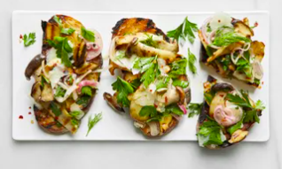

Open-Face Mushroom Sandwiches With Pecorino Salsa Verde

Rate The Recipe:
There’s something really satisfying about making a meal over a live fire, no matter what’s on the grate. Grilling king trumpet mushrooms turns them deeply savory and tender with a meaty bite. But if you can’t find them, crimini mushrooms will also work just fine. The only condiment the grilled mushrooms need is Pecorino salsa verde, a tasty remix of a sauce I learned during my time as sous-chef at San Francisco mainstay Zuni Café. Pecorino Romano has an assertive flavor on its own, but tempered by herbs and olive oil it’s the perfect accompaniment to grilled vegetables. This sandwich works great as a salad too: Just tear the grilled bread into smaller chunks, slice the grilled mushrooms in half, and toss in a bowl before serving.
Ingredients
Pecorino salsa verde:
3 medium shallots, thinly sliced crosswise, rings separated
1 Tbsp. plus 1½ tsp. red wine vinegar
1 tsp. crushed red pepper flakes
1 tsp. freshly ground black pepper
Kosher salt
3 oz. Pecorino Romano, Grana Padano, or Parmigiano-Reggiano
2 cups (loosely packed) mixed tender herb leaves or greens (such as parsley and dill or dill and arugula)
5 Tbsp. extra-virgin olive oil
Mushrooms and assembly:
1 lb. king trumpet or crimini mushrooms, trimmed
6 Tbsp. extra-virgin olive oil
6 1"-thick slices country-style bread
Preparation
Special Equipment
Six–eight 10" metal skewers or bamboo skewers, soaked (optional)
Pecorino salsa verde
Toss shallots, vinegar, red pepper flakes, and black pepper in a small bowl to combine; lightly season with salt (the Pecorino will add some saltiness, so bear that in mind). Let sit 3 minutes.
Meanwhile, very thinly slice Pecorino into tiles with a knife (irregular pieces are okay).
Add Pecorino, herbs, and oil to pickled shallots and toss gently to combine. Taste and season with more salt if needed; set aside.
Mushrooms and assembly
Prepare a grill for medium-high heat; clean grate. Working one at a time, set mushrooms on their sides and slice lengthwise ¼" thick to make 3–4 planks per mushroom, depending their size. If your mushrooms are particularly small or you are using crimini, slice ½" thick and thread onto skewers to keep them from falling through grate.
Using some of the oil, brush cut sides of mushrooms and transfer to a large bowl or arrange on a rimmed baking sheet if skewered. Lightly brush both sides of each slice of bread with remaining oil and transfer to a platter.
Press each slice of bread down across grate for even contact and grill until browned with some lightly charred spots, about 2 minutes per side. The goal is a crunchy exterior with a still chewy center. Transfer bread back to platter.
Brush grate to clean. If using a gas grill, turn heat down to medium. A charcoal grill should be at the tail end of medium-high and headed toward medium at this point, but wait a few minutes if needed. Grill mushrooms, turning halfway through and moving around as needed to avoid flare-ups, until golden all over with lightly charred edges, 6–8 minutes for small pieces and 8–10 minutes for large ones. Return to bowl (slide off of skewers if needed). Add Pecorino salsa verde and toss to combine. Spoon mushroom mixture over grilled bread.